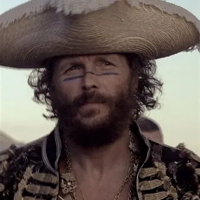

da gio 26 nov a dom 29 nov
Lorenzo – L’incredibile avventura di Jovanotti
Dalla piccola radio locale alle grandi folle, dalle canzoni ai viaggi, fino alle imprese in bicicletta. È la storia di Lorenzo Cherubini, in arte Jovanotti, quella raccontata in Lorenzo – L’incredibile avventura di Jovanotti, il nuovo documentario di Carlo Zoratti, regista…
 Indicazioni
Indicazioni
- Costi e prenotazioni
- Costo non indicato · Prenotazione non indicata
- Programma
- Programma da verificare. Apri la fonte ufficiale per orari e possibili aggiornamenti.
- In caso di maltempo
- Nessuna indicazione specifica pubblicata.
- Note
- Acquisito automaticamente dalla fonte.
L’EVENTO
Descrizione completa
Dalla piccola radio locale alle grandi folle, dalle canzoni ai viaggi, fino alle imprese in bicicletta. È la storia di Lorenzo Cherubini, in arte Jovanotti, quella raccontata in Lorenzo – L’incredibile avventura di Jovanott i , il nuovo documentario di Carlo Zoratti, regista, sceneggiatore e produttore, già autore di The Special Need , scritto a quattro mani con Dario Zonta.
Giovedì 26 novembre alle 20.30 e domenica 29 alle ore 11.00 al Visionario di Udine sarà ospite in sala il regista del film Carlo Zoratti .
Il documentario ripercorre la vita straordinaria di uno degli artisti più amati della musica italiana, attraversando le canzoni, il successo, i viaggi e le avventure che hanno segnato il suo percorso. Ma il racconto non si ferma all'immagine pubblica di Jovanotti: va oltre ciò che tutti conosciamo per raggiungere una dimensione più intima, personale e sorprendente . Ne emerge un ritratto autentico, che dalla storia di un artista diventa una riflessione universale sulla possibilità di continuare a sognare, amare e crescere, a qualsiasi età. Così, l'artista che tutti conoscono lascia spazio alla persona che pochi hanno davvero avuto modo di incontrare. «Il nostro film – spiegano i registi – parte da una convinzione: non esiste un “dietro” Jovanotti. Il bambino, l’artista che compone e il cantante davanti alla folla sono la stessa persona. Noi abbiamo cercato di arrivare tanto vicini da rendere visibile il movimento che li unisce: attraversare la memoria e trasformarla in un’esperienza condivisa». Un viaggio cinematografico che invita a guardare Lorenzo da una prospettiva nuova, lasciandosi sorprendere non soltanto dalla sua incredibile avventura artistica, ma soprattutto dalla persona che si cela – senza mai nascondersi davvero – dietro le canzoni. Biglietti disponibili online e in biglietteria
IL PROGRAMMA
Programma e orari
Appuntamenti raccolti dalle fonti elencate. Dove manca un orario, non è ancora disponibile in questa scheda.
Programma pubblicato
- Dal 2026-11-26 al 2026-11-29
INFORMAZIONI UTILI
Prima di partire
- Controllare la fonte prima di partire.
ORGANIZZAZIONE